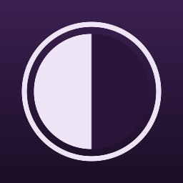

iPhone and iPad
iOS and iPadOS 17 or later
- Open Settings, then Apps, then Safari. On iOS 17, open Settings, then Safari.
- Tap Extensions, then Umbra.
- Turn Umbra on.
- Set All Websites to Allow.
Safari extension for iPhone, iPad and Mac
Umbra gives every website in Safari a dark mode. Pages open dark instead of flashing white first, and sites that already have a dark mode keep their own.
25 themes
Pick one, then fine-tune brightness and contrast.
What it does
Follows your device between Light and Dark, or keeps every site dark all day. Switch any single site on or off from Safari.
Pages appear dark from the start, instead of loading white and changing a moment later.
When a site has a dark mode of its own, Umbra steps aside. You can still use Umbra’s theme on any site you choose.
Umbra checks text contrast as it themes a page, and fixes anything that would be hard to read.
Change settings from Shortcuts or Siri, switch themes with a Focus, and add Umbra to Control Center on iOS 18 and later.
Your settings sync through iCloud, so your iPhone, iPad and Mac stay in step.
Set up
Safari keeps new extensions switched off until you allow them. You only need to do this once on each device.
iOS and iPadOS 17 or later
macOS 14 Sonoma or later
Umbra needs access to page content to build a dark theme. Nothing about the pages you visit ever leaves your device. Read the privacy policy.
Open Umbra’s menu in Safari while you’re on that site, and it tells you why. Usually Umbra hasn’t been allowed on that site yet, or Dark Mode is set to Automatic while your device is in Light mode.
That’s deliberate: Respect Built-in Dark Modes is on in the app. To use your Umbra theme on one of those sites, open Umbra’s menu there and turn on Ignore built-in dark mode.
Try another theme, or raise Contrast. To stop Umbra on that site, set it to Off in Umbra’s menu, and please email us the page’s address so we can look into it.
Reload any tab that was open while Umbra updated. Pages you open afterwards are darkened as usual.
Yes. Umbra syncs your settings through your iCloud account to your iPhone, iPad and Mac.
Privacy
Last updated
Umbra collects nothing.
App Store privacy label: Data Not Collected
Umbra collects no information about you or the websites you visit, and shares nothing with anyone. It has no accounts, analytics, advertising, tracking or crash reporting.
To darken a page, Umbra’s Safari extension reads the page’s content and styles. This happens inside Safari, on your device. What it reads is used only to build the dark version of that page, and is never stored or sent anywhere.
Umbra has no servers, and sends nothing to its developer or anyone else. To darken some pages it has to read a stylesheet the page already uses, so it downloads that file again, from the same address and without cookies. That request goes only to the website the stylesheet came from.
Only your settings: the Dark Mode setting, your theme, brightness and contrast, and the websites you’ve given a setting of their own, such as “example.com: Off”. They’re kept on your device and, if you use iCloud, in your iCloud account so your devices stay in step. The developer can’t see them.
You can remove site settings at any time in the app, and removing them there removes them from iCloud too. Deleting Umbra removes everything it stored on that device.
Umbra contains no third-party code for analytics, advertising or tracking. iCloud sync is provided by Apple and covered by Apple’s privacy policy.
Umbra collects no personal information from anyone, including children.
If this policy changes, the new version will be posted on this page with a new date.
Umbra is made by Tiger & Bunny Pty Ltd. For questions about this policy, email tigernbunny@outlook.com.

Include the website’s address, your device, and your version of iOS, iPadOS or macOS.
tigernbunny@outlook.comUmbra 1.0 · Requires iOS 17, iPadOS 17 or macOS 14 or later